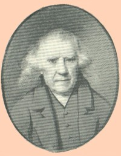

by
Stefan Bielinski
Goldsbrow Banyar was born in London, England about 1724. A career British colonial official, he achieved wealth and prominence in colonial New York, survived the Revolution, and lived the last two decades of his long life in Albany.
A young Banyar came to America during the 1730s. Perhaps he was associated with the interests of George Clarke, lieutenant governor of the province of New York. In 1746, he was appointed Deputy Auditor-General of the province and then Deputy Secretary of the province and also Deputy Clerk of the Council and the provincial Supreme Court. He served in these capacities for many years and was reknowned for his ability to influence the transaction of business in the province - especially where it concerned the patenting of lands.
In 1767, he married the widow Elizabeth Mortier Appy of New York City. He lived in New York City but was able to acquire extensive acreage in the unsettled regions of the province.
During the 1760s and 70s, this royal official came to Albany on business and was made welcome by the region's prominent personages.
At the onset of the Revolutionary War, he retired to Rhinebeck and sought to avoid the conflict there. 
In 1790, he was living in Rhinebeck attended by a number of servants.
Shortly thereafter, he moved to Albany to a house at 62 North Pearl Street where he lived for remainder of his life. Approaching his seventieth birthday, Banyar used savings to live comfortably in his new home. He owned the substantial Pearl Street home, another house in the first ward, and additional lots as well. In 1800, his household included five slaves.
Living with him were his newly-wed son Goldsbrow Jr., and daughter-in-law, Maria Jay - the daughter of John Jay. The son died in 1806 but Maria remained in Albany to care for the aging Goldsbrow Sr. until his death.
Banyar's name was included on the boards of a number of organizations including the incorporaters of the Bank of Albany in 1792.
His long life was recalled in a touching memoir by Gorham Worth. Goldsbrow Banyar died in November 1815 at age ninety-one! His will passed probate a few days later.
notes
 Sources: The life of Goldsbrow Banyar is CAP biography
number 7200. This profile is derived chiefly from community-based
resources. The standard summary is found in NYCD,
volume 8, pp. 188-89. His career is well-represented in the Johnson
Papers. See also, "Diary of Goldsbrow Banyar, Deputy Secretary
of the Province of New York, August 5 to 20, 1757." Magazine of American
History, 1 (January 1877), pp. 25-33. Online in 2008.
Sources: The life of Goldsbrow Banyar is CAP biography
number 7200. This profile is derived chiefly from community-based
resources. The standard summary is found in NYCD,
volume 8, pp. 188-89. His career is well-represented in the Johnson
Papers. See also, "Diary of Goldsbrow Banyar, Deputy Secretary
of the Province of New York, August 5 to 20, 1757." Magazine of American
History, 1 (January 1877), pp. 25-33. Online in 2008.
Portraits: Adapted from a miniature of unknown origins as printed in the Johnson Papers, volume 9, facing p. 274. Another portrait by John Trumbull is in the collection of the Albany Institute of History and Art.
first posted: 9/5/02; last updated 8/27/12